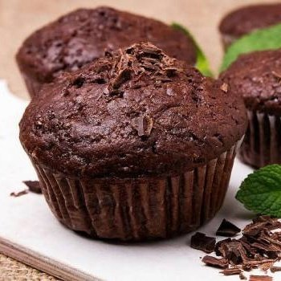
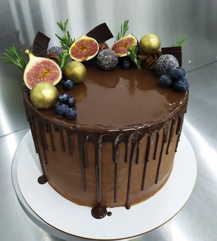
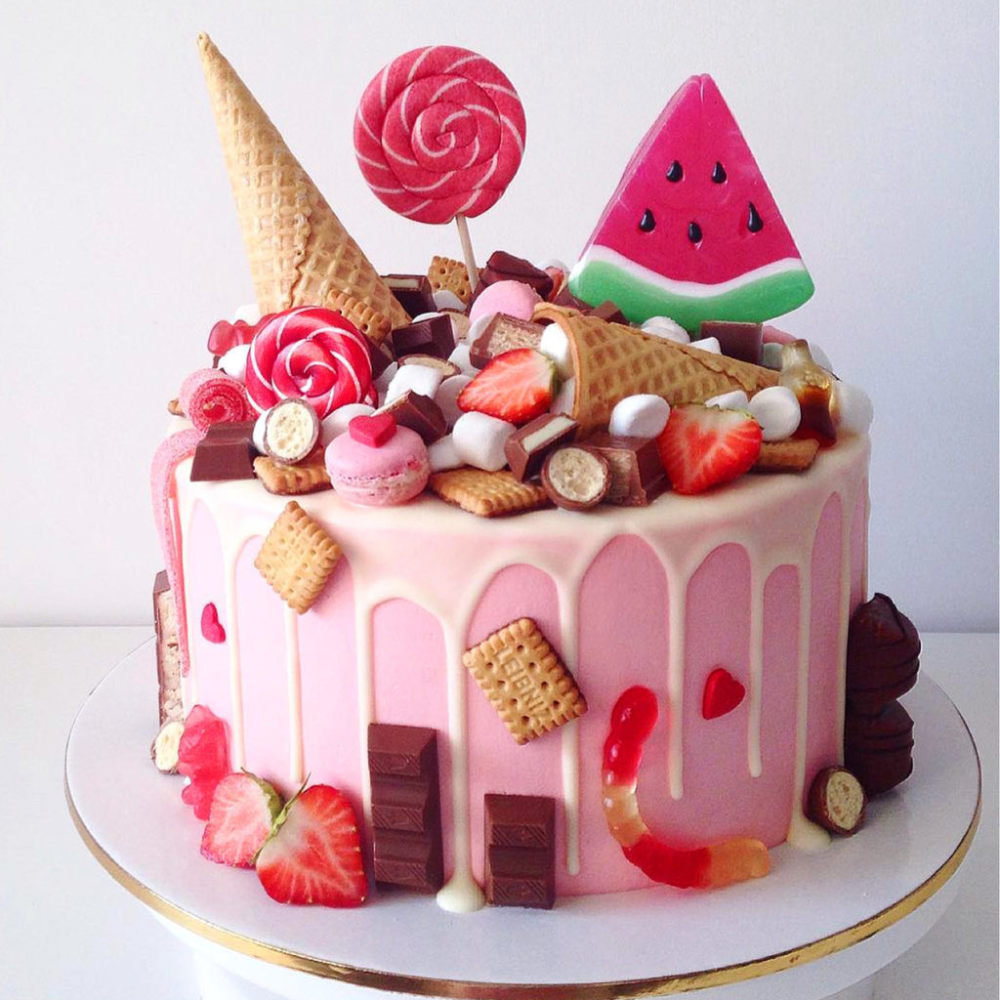
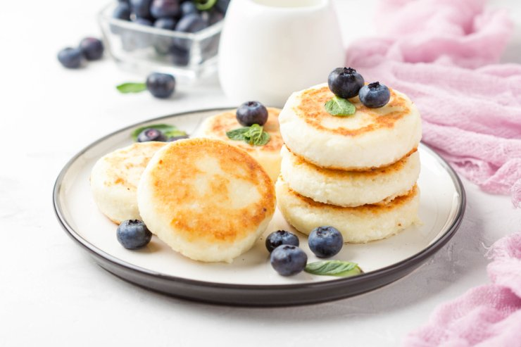
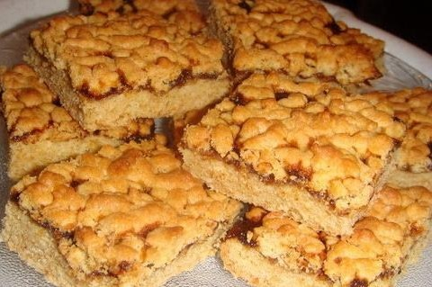
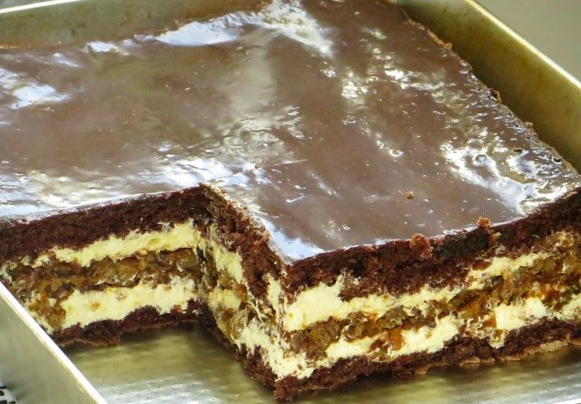
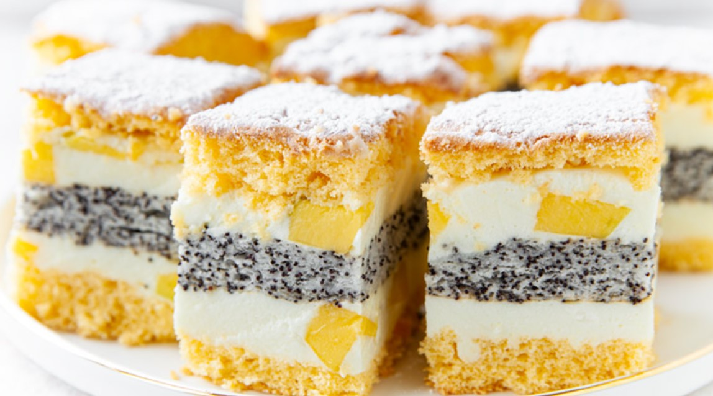
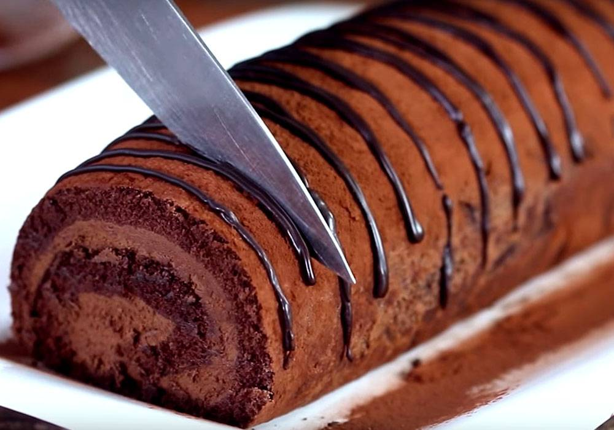
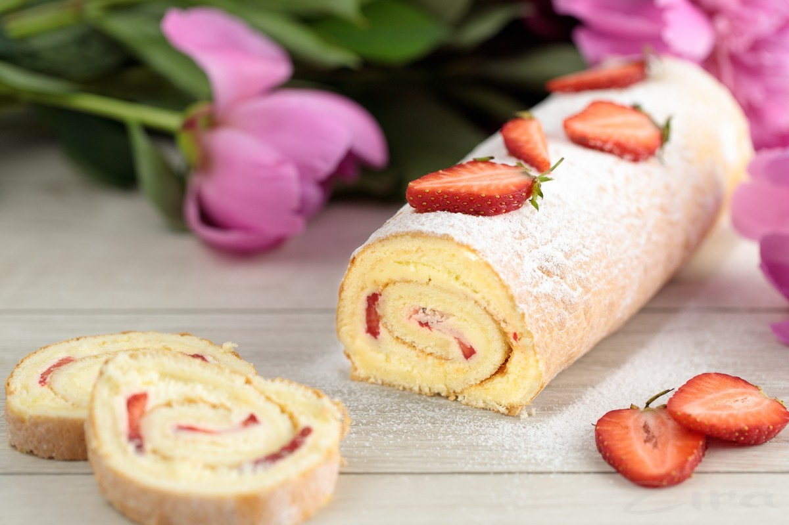

Калорії у порції:
Від 0 до 700кКал
Тістечка
Пляцки
Рулети
Сирники
Очистити все

Тістечко:
Мафін
Калорій у порцій 305кКал

Пляцок:
Шоколадний торт
Калорії в порції 506кКал

Пляцок:
Райдуга
Калорії в порції 600кКал

Сирники:
Три якгодки
Калорії в порції 230кКал

Пляцок:
Тертий пиріг
Калорії в порції 305кКал

Пляцок:
Шоколадний
Калорії в порції 408кКал

Пляцок:
Маковий
Калорії в порції 120кКал

Рулет:
Шоколадний
Калорії в порції 700кКал

Рулет:
Полуничний
Калорії в порції 400кКал